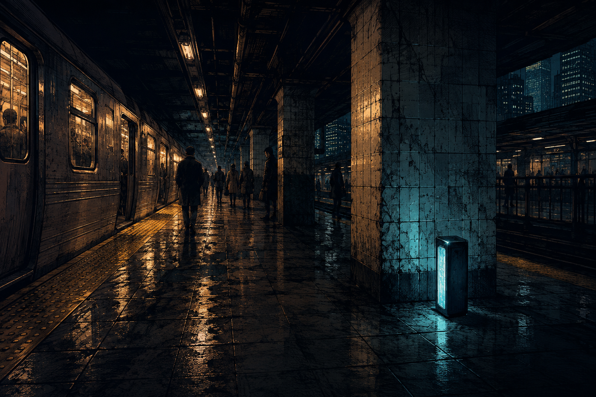

The machine is already certain.

ILLUSTRATED SCENE / NOT EVIDENCE
An object on the platform. An AI already calling it a weapon.
An object on the platform. An AI already calling it a weapon.
WHAT YOU ARE LEARNING
Distinguish a direct observation from an AI-generated inference.
Distinguish a direct observation from an AI-generated inference.
RIVERA / PLATFORM
Your AI assistant, Signal, compresses the first reports into a single alert. Rivera is waiting for your briefing.